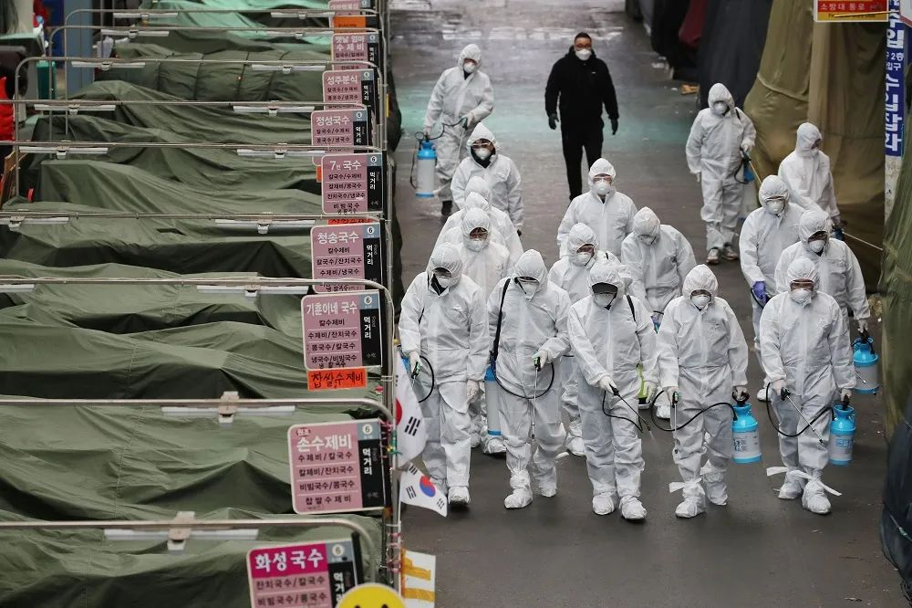
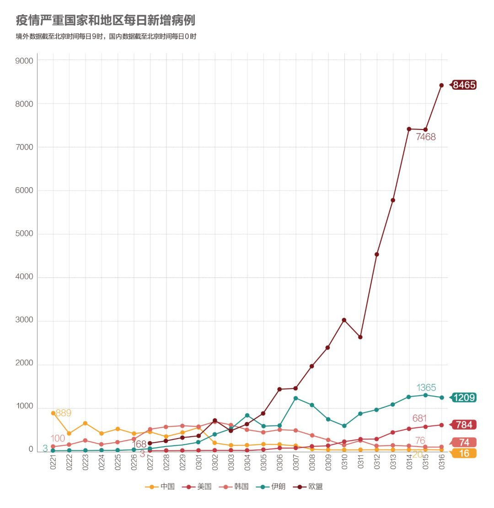
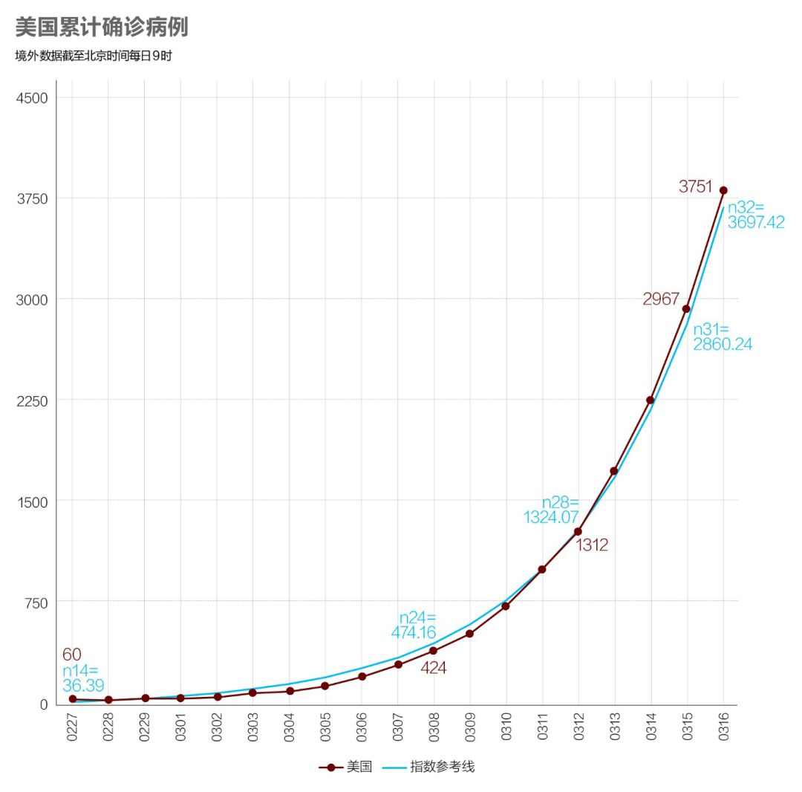
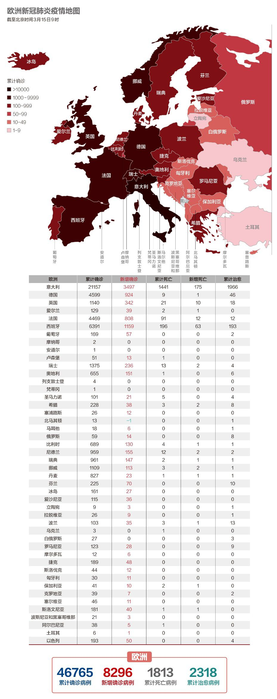
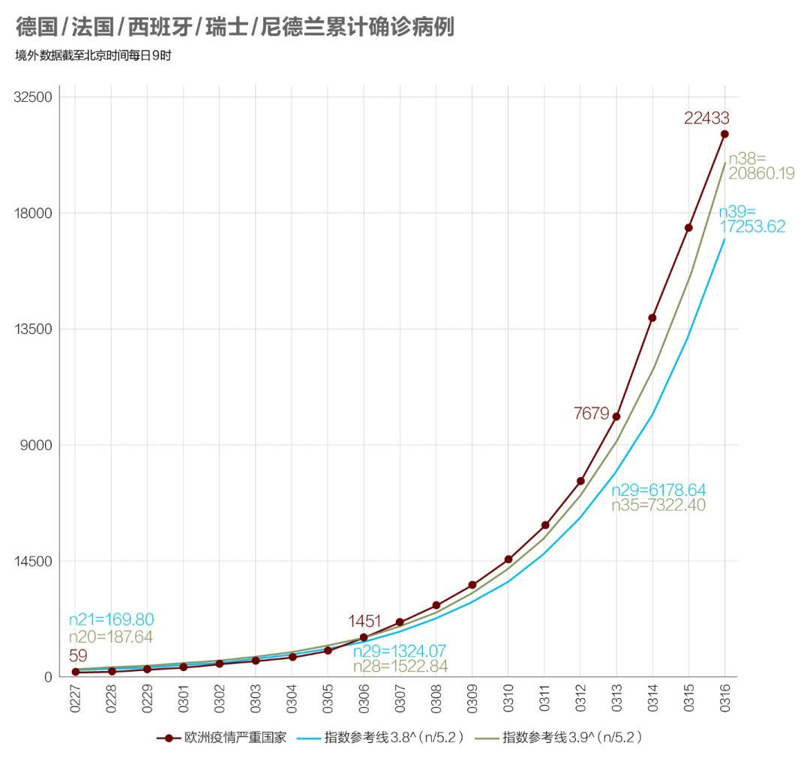
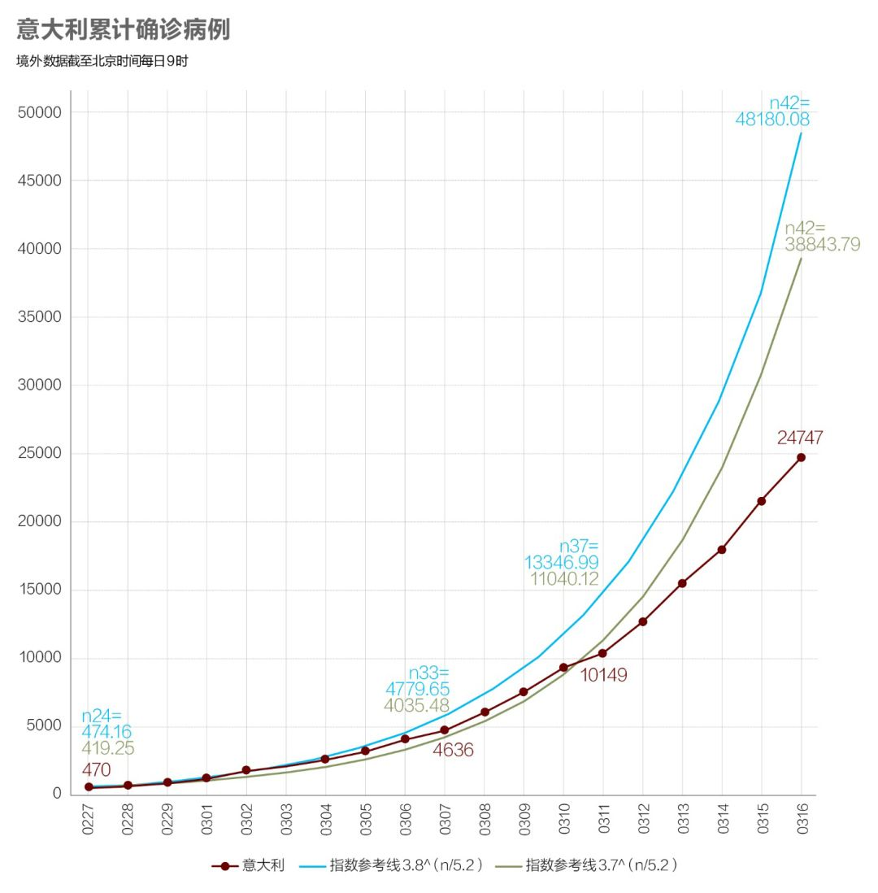

华府疫情陷落28小时
原文链接 备份链接 文 |《财经》特派记者 金焱 发自华盛顿 编辑 | 苏琦 2020年3月6日，我打算给自己放一天的假。 算起来自从武汉疫情暴发，我在1月21采写了第一篇文章《美确诊首例新型病毒病例，或成全球性公共卫生危机事件信号》 …

中国现有确诊病例已降至1万以下。国内已采取最严密的入境防疫检测措施。美国继续在快车道上狂奔，但基本防疫措施已经得到重视和加强

文丨《财经》数据研究员 徐进 图丨《财经》视觉中心
编辑丨郝洲
一、境外输入病例北京居首，实施最严入境检疫措施
图1

今日国内简述：国内3月15日报告累计确诊病例80860例，武汉新增4例，湖北非武汉地区连续11日零新增。国内非湖北地区无本地新增。新增报告境外输入确诊病例12例（北京4例，广东4例，上海2例，云南1例，甘肃1例）。即日起，北京实行最严密的入境检疫。对所有境外进京人员，包括从其他口岸进京的，进行14天的集中医学观察，费用自理。对有症状、有病史、有线索、有必要的必查，进行核酸检测。
二、海外累计确诊病例首超国内，单日增幅进一步扩大
图2

海外累计确诊病例和累计死亡病例双双超过国内，新增数字毫无减退之意。与此同时，疫情在亚非多国蔓延，撒哈拉以南非洲已有23个国家报告新冠肺炎确诊病例。
图3

欧盟新增病例增长继续呈加速态势，何时见顶尚未可知。韩国已经连续两日保持新增在两位数，疫情得到控制的判断进一步坐实。
三、美国联邦政府加紧磋商防控措施
图4

美国的新增确诊已经朝着1000的级别大踏步迈进，继续行驶在快车道上。目前，美国仅剩西弗吉尼亚州未报告感染病例。该州面积较小、号称“山脉之州”，多为乡村地带，“没有很多国际旅行人士”。但州长吉姆·贾斯特斯表示，“病毒肯定已经在这里了，只是我们还没有发现。”
负责全国抗疫工作的美国副总统彭斯说，联邦政府正与各州政府商讨抗议措施细节，将于今日稍晚公布。新一轮抗疫措施可能包括颁布实施宵禁、关闭餐厅等指引。从3月16日早上开始，进入（白宫）区域的所有人，包括访客、记者团成员等，将被要求测量体温。
美国疾控中心3月15日呼吁在未来8周内取消50人或50人以上的现场集体活动，以防止新冠病毒的传播。该指导意见并不适用于学校、大学或企业等大型组织。不过，纽约市在3月15日宣布，暂时关闭全市逾1,800家公立学校至4月20日，将有110万名学童、7.5万名教师受影响。
图4.1

美国至今牢牢站在传染数为3.8的拟合线上。以此数据趋势推算，美国虽疫情起步较晚但总病例数将明显超过湖北和意大利，略好于西欧5国（德国/法国/西班牙/瑞士/尼德兰）合计。
四、德国关闭部分边境，意大利新增死亡创新高
图5

西班牙已成为欧洲疫情第二严重的国家，仅次于意大利。
法国多地的口罩、免洗洗手液等防疫物资已脱销。
德国政府决定，自3月16日早8时起关闭与法国、瑞士和奥地利的边境，但因工作原因往返边境的人员及货运不受影响。这一措施，将由联邦警察执行，各州警察予以配合。与此同时，德国铁路也将从下周起进一步减少境内车次，且鉴于当前出行乘客数大幅下降，列车上将不再进行查票。
爱尔兰关闭酒吧两周。荷兰关闭学校、酒吧、餐厅至少两周。
图5.1

我们发现假设传染数为3.9时（绿线）比3.8时（蓝线）能更好拟合西欧除意大利外5个主要疫情国的合计数据。说明其疫情严重程度超过意大利。以现在的数据趋势，这5国的病例总数将远远超过湖北和意大利。
图6

意大利一天之内新增死亡368人，创下新高，这已远超中国最高峰时单日新增死亡病例（254人）。
图6.1

与想象不同的是，我们发现假设传染数为3.7比3.8时能够更好拟合意大利的数据。就当前数据趋势看，其未来总病例数将与湖北相当，并明显小于美国。意大利似乎从3月10日（n37）以后向有偏离参照线，尚不能确认属于防控效果。明天将尝试分段拟合。
五、韩国要打防疫持久战，京畿道再爆集体性感染事件
图7

韩国卫生部门3月16日强调，要做好准备打防疫持久战。韩国中央防疫对策本部部长郑银敬称，综合专家、国际社会意见，新冠病毒恐怕难以在短期内消灭。
随着欧洲疫情进一步加重，韩国政府从3月16日起将特别入境检疫程序的适用范围扩大至欧洲全境。政府有关部门还正在考虑将该措施适用于所有国家和地区。
京畿道城南市3月16日表示，城南市教会一天40人确诊新冠肺炎。因此，与该教会有关的新冠肺炎确诊者增至46名。此前，该教会的牧师夫妻和教徒等6人，于3月9~15日依次确诊。据调查，该教会的确诊者们在3月8日一起进行过礼拜。随着出现确诊者，城南市于15日对参加过8日礼拜的90多名教徒和全体135名教徒进行了检查。
六、伊朗已完成1000万人排查
图8

目前伊朗国家动员计划已经完成1000万人的疫情排查工作。其中21万人出现头痛、发热等症状，在这21万人中，3万人由于症状严重被送往医疗中心，其中1200人被转至医院，900人住院治疗。
【特别说明：以上统计，2月28日前为世卫组织官方统计数据，数据截止时间为北京时间每日17时；从2月28日开始，数据由《财经》根据公开资料统计，截止时间为北京时间每日9时】
七、全球疫情数字速览：
1、【7,000亿美元量化宽松】美联储表示：“新冠肺炎的爆发已经损害了包括美国在内的许多国家的社区并破坏了经济活动。”美联储将利率降至接近零，并启动一项规模达7,000亿美元的大规模量化宽松计划，以保护美国经济免受新冠肺炎的冲击。面对高度动荡的金融市场，美联储还将银行贴现窗口的紧急贷款利率下调了125个基点至0.25％，并将贷款期限延长至90天。
2、【伦敦-北京机票价35000元】海外疫情不断恶化，飞往中国的航班减少，随之而来的是机票价格暴涨。以3月16日为例，在线购票平台显示，有5趟从伦敦飞往北京的航班机票在售，全部为中转。票价从人民币15,000元至35,000元不等，而且全部是经济舱。3月16日从法国巴黎起飞至北京的航班有六趟在售，票价最低近1.5万，最高达到47,410元。而2019年同期票价最低仅为1,977元。
小结：中国现有确诊病例已降至1万以下。国内已采取最严密的入境防疫检测措施，但海外疫情日益严重，回国航班一票难求。美国继续在快车道上狂奔，但基本防疫措施已经得到重视和加强。

▲点击图片查看更多疫情报道
责编 | 蒋丽 lijiang@caijing.com.cn
本文为《财经》杂志原创文章，未经授权不得转载或建立镜像。如需转载，请在文末留言申请并获取授权。
原文链接 备份链接 文 |《财经》特派记者 金焱 发自华盛顿 编辑 | 苏琦 2020年3月6日，我打算给自己放一天的假。 算起来自从武汉疫情暴发，我在1月21采写了第一篇文章《美确诊首例新型病毒病例，或成全球性公共卫生危机事件信号》 …
原文链接 备份链接 国内31个省区市新增确诊降至两位数；全球累计确诊病例已破10万大关；意大利疫情最严重地区医疗资源已消耗殆尽 文 |《财经》数据研究员徐进 图 |《财经》视觉中心 编辑 | 郝洲 一、国内疫情防控形势继续向好，局面尽在 …
原文链接 备份链接 随着新冠肺炎疫情的蔓延，在过去的一天，韩国、意大利、伊朗等多国新增确诊数继续上升，中国以外累计确诊病例超过15000例。 世卫组织：部分国家对新冠肺炎准备不足 当地时间3月5日，世卫组织在日内瓦召开新冠肺炎疫情例行发 …
原文链接 备份链接 境外累计确诊病例即将超过2万。美国很可能有上千例潜在感染病例以及他们的密切接触者未能被及时发现和隔离，到目前为止，“我们看到的美国官方病例数字可能只是冰山一角”。 文 |《财经》数据研究员徐进 图 |《财经》 …
原文链接 备份链接 国内单日新增病例有望很快落到两位数，全国治愈率跨过60%节点。新冠疫情在海外大部分国家和地区（包括美国）还处于暴发的早期阶段。 文 |《财经》数据研究员徐进 图 |《财经》视觉中心 编辑 | 郝洲 一、 国内多地迎来 …